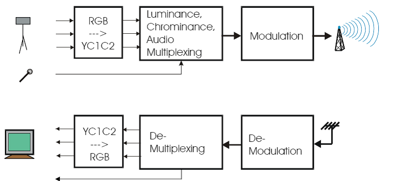
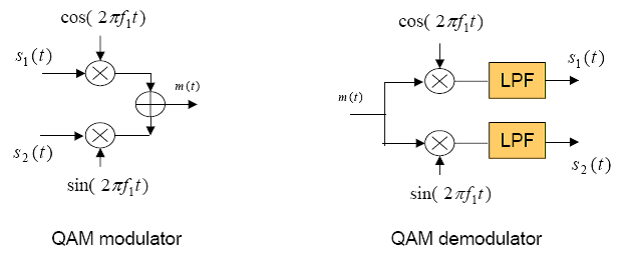
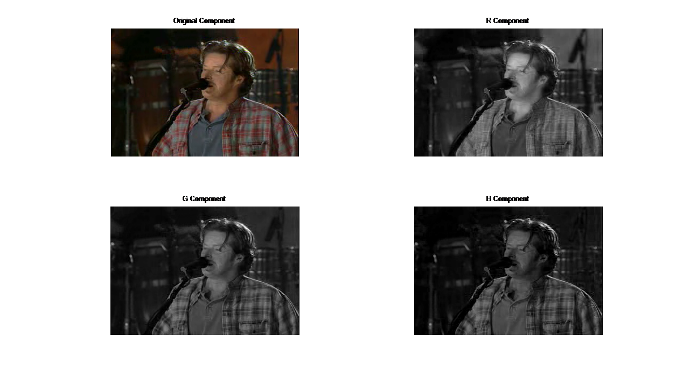
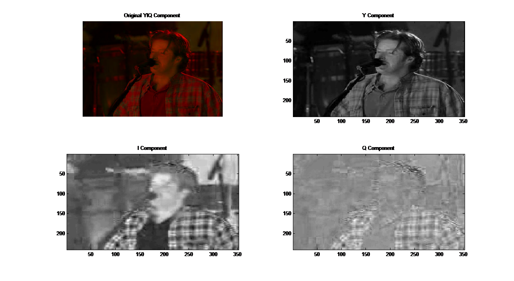
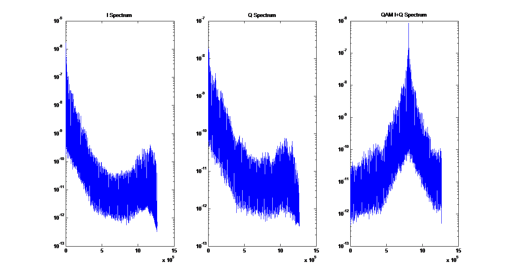
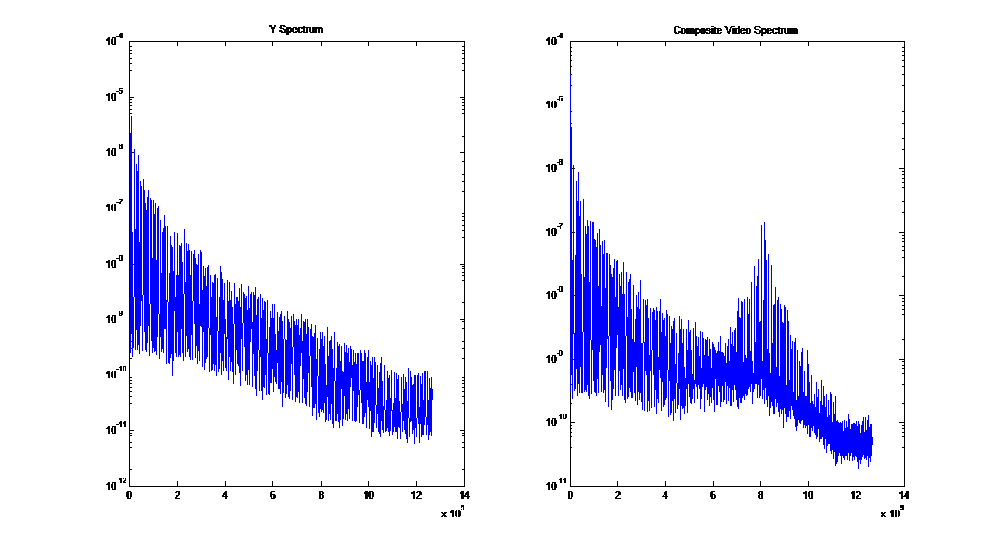
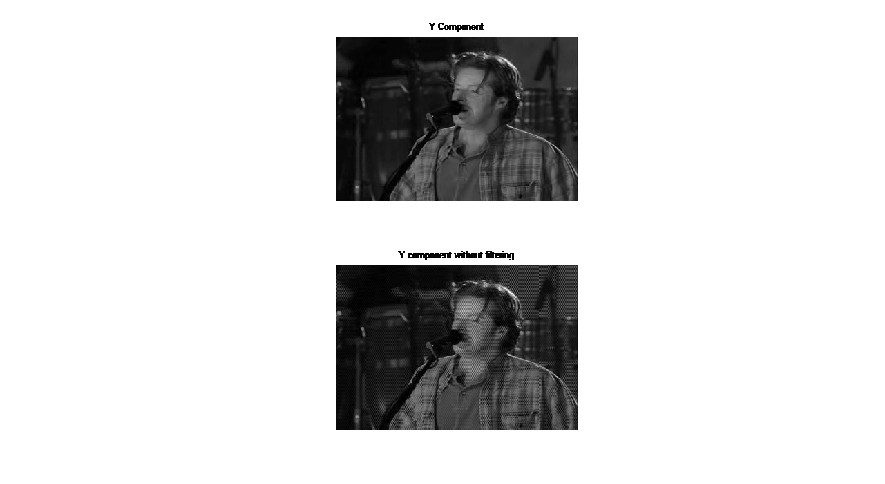
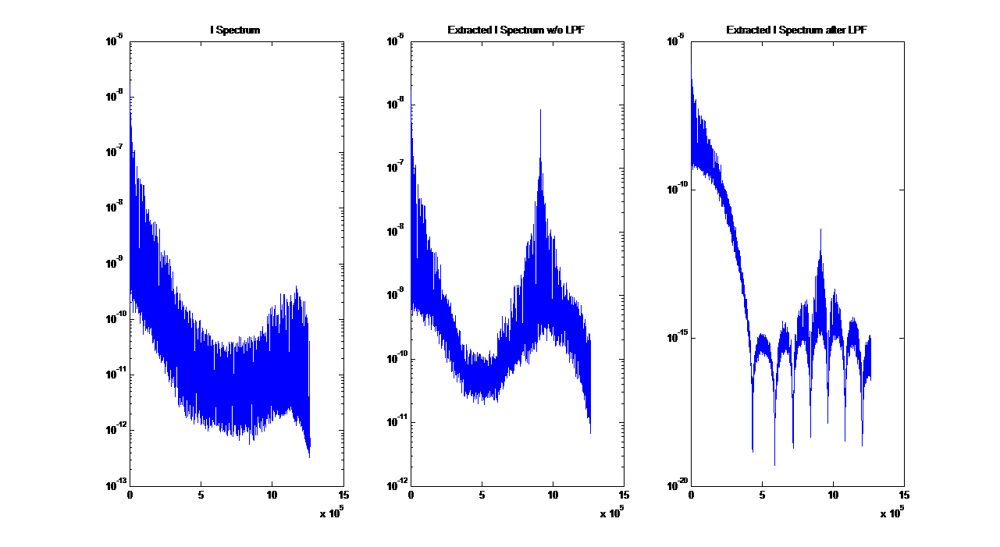
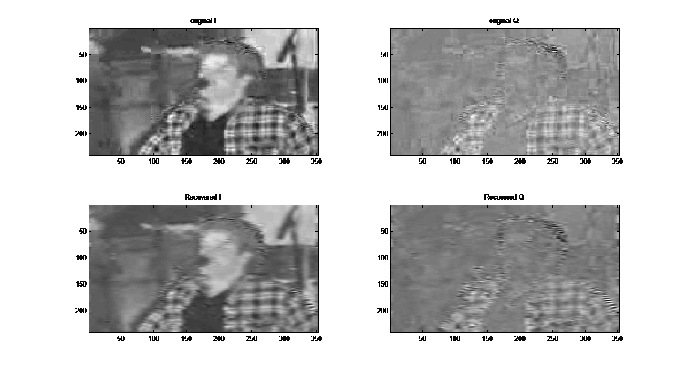
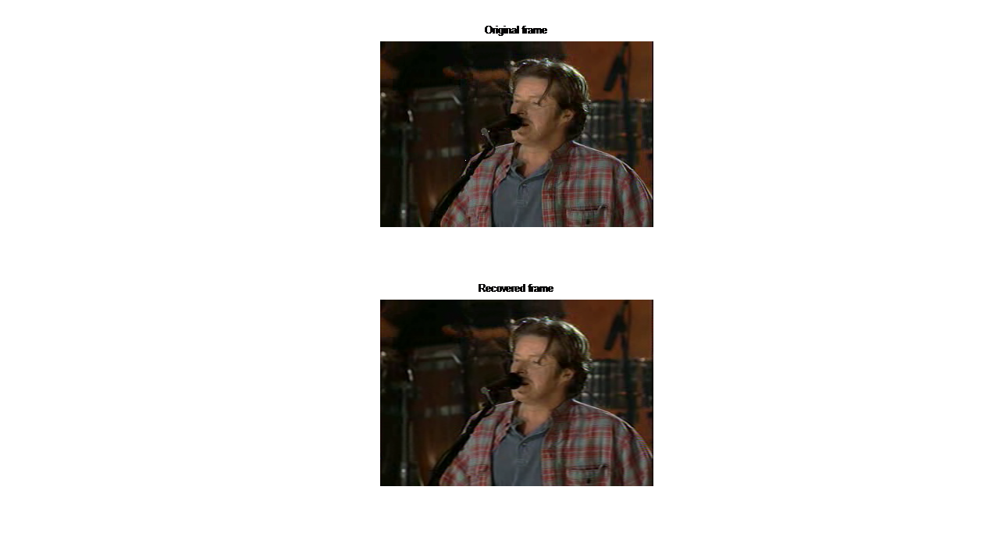

Shankar Jagadeesan
Teaching machines to see and respond

Component Video Signal analysis in Spatial and Frequency domain
In this project we compare the original component video signal telecasted and the recovered component video signal at the reciever. The component to QAM modulated composite signal conversion is performed and the video signal is recovered from the composite signal by demodulation. The project was coded in MATLAB.
Component to Composite to Component - QAM modulation & Demodulation
The main aspect of this computer project is to demonstrate the Color TV broadcasting and receiving. The figure below shows how the video signal is broadcasted received and set of process involved in it.In this project we don�t consider the audio signal, since we are going to multiplex and de-multiplex the video components alone. The input is a raw video signal which is in RGB format. Then the video is converted into YIQ format which contains the Y- Luminance part and I+Q combine to form the chrominance part.
|  |  |
| The Whole process | QAM mod & demod |
{kind=link}
{kind=link}
Now the chrominance and luminance part of the video signal are multiplexed to form the composite video signal. The chrominance signal can be band limited; hence I and Q components are multiplexed onto the same sub carrier using Quadrature Amplitude Modulation (QAM). QAM is explained in the below diagram. QAM is a method to modulate two signals onto the same carrier frequency, but with 90 degree phase shift.First, the two chrominance components I(t) and Q(t) are combined into a single signal C(t) using quadrature amplitude modulation (QAM). The color sub-carrier frequency fc is chosen to be an odd multiple of half of the line rate, fc = 455*f1/ 2 = 3.58 MHz. This is chosen to satisfy the following criteria: i) It should be high enough where the luminance component has very low energy; ii) It should be midway between two line rate harmonics where the luminance component is strong; and iii) It should be sufficiently far away from the audio sub-carrier, which is set at 4.5 MHz (286 f1), the same as in the monochrome TV.
Recoverying the video signal
Y, I and Q components are filtered using a LPF, where I & Q components are phase shifted by 90 degree. I and Q are summed together, and then passed through a band pass filter. The I component is multiplied with cosine signal and gated. All the 3 Components are summed together to form the composite video.
|  |  |
| RGB Components | YIQ Components |
{kind=link}
{kind=link}
This composite video has to be de-multiplexed at the receiver end into YIQ components. The Y component is then comb filtered, which is used to filter out the harmonic peaks that correspond to chrominance signals. In low-end TV receivers, a low pass filter with cut-off frequency at 3MHz is typically used to separate the luminance and chrominance signal. The high frequency part of I component (2 to 3 Mhz) is still retained in the luminance signal. The extracted chrominance components can contain significant luminance signal in a scene with very high frequency (luminance energy is not negligible near fc). Then the extracted YIQ components are converted into RGB format and displayed in the television sets.
YIQ Waveforms and Comparison of Original & Recovered frames
In the final figure of the project we compare the original frame and the recovered frame which is received by the television receiver. The Television users see only the recovered frame. When we compare it with the original frame, we can notice the difference in quality of the image. The image looks slightly blurred and it loses its sharpness. The multiplexing methods are designed so that the color TV system is downward compatible with the monochrome TV system. Furthermore, the modulation frequencies for individual components are chosen to minimize the interference among them.
|  |  |
| I, Q, QAM+I Spectrum | Y and Composite video spectrum |
|  |  |
| Y component without filtering | Extracted I spectrum after LPF |
|  |  |
| Comparison of Original & Recovered I and Q | Original & Recovered frame |
{kind=link}
{kind=link}
{kind=link}
{kind=link}
{kind=link}
{kind=link}